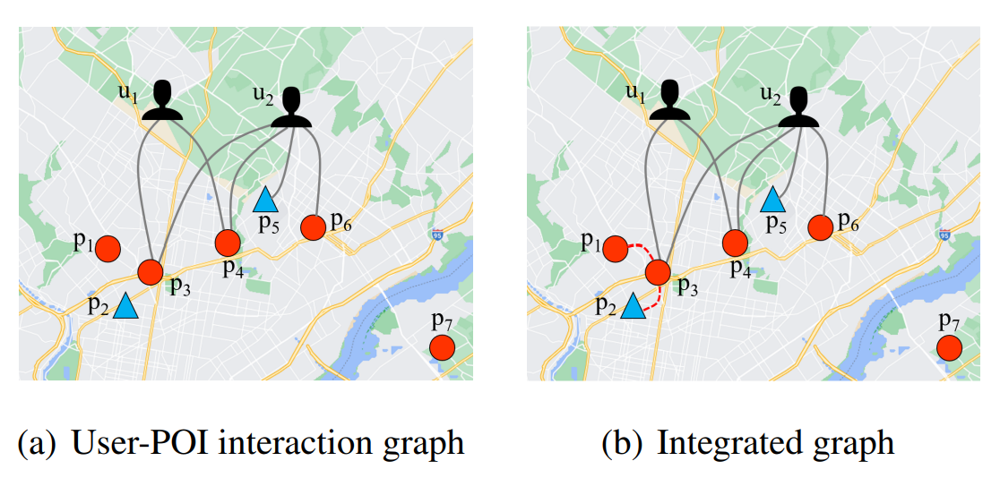
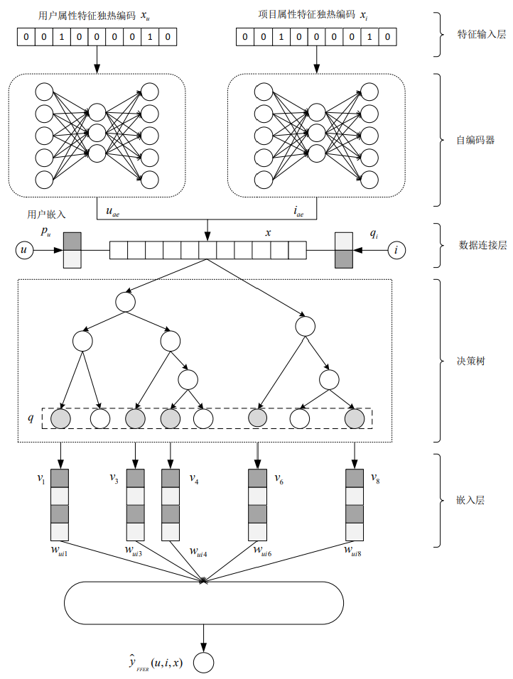
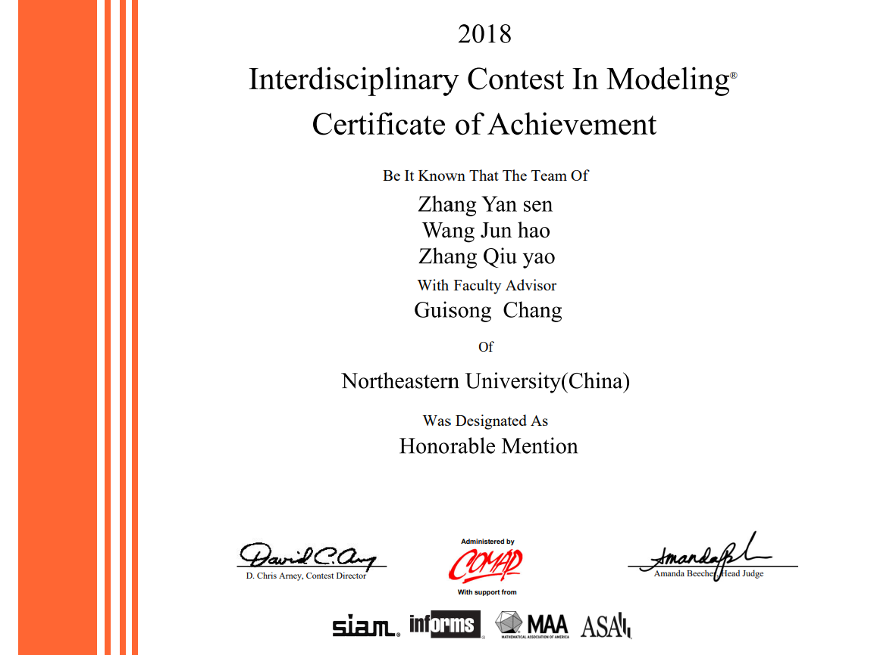
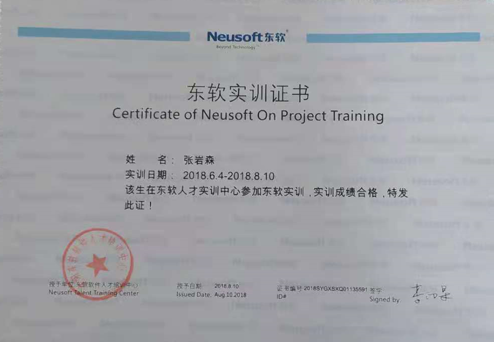

Yansen Zhang（张岩森）
Love life. Enjoy Research.

Yansen Zhang（张岩森）
Love life. Enjoy Research.
I'm currently a master student at the School of Computer Science and Engineering, Sun Yat-sen University by Postgraduate Candidates Exempt from Admission Exam. My academic supervisor is Prof. Yubao Liu and I'm doing the research of graph-based sequential recommendation. I received the bachelor's degree from the School of Software College, Northeastern University. My academic enlightenment advisor was Prof. Guibing Guo and I followed him to research the topic of explainable recommendation.
My research focused on sequence-aware recommendation based on graph neural networks. During my work, I grew increasingly interested in Graph Learning and Sequence Learning, and I plan to pursue deeper research in these topics if I offer my desirable PhD position. If you want to learn more about me, please click on the Personal Statement page to discover more.
M.S. in Software Engineering
Sun Yat-sen University
Guangzhou, China
Sep 2019 - Jun 2022
B.S. in Software Engineering
Northeastern University
Shenyang, China
Sep 2015 - Jun 2019

We proposed a self-adaptive graph neural network with future contexts for sequential recommendation. SA-GNN applied a GNN model within both past and future contexts to model user dynamic interests, and utilized a self-adaptive module and attention module to weaken the negative effect of unsuitable connections in item graph.
Paper Code
We proposed a novel model SIMGCN based on the integrated graph that contains the geographical influence among POIs. In our model, we proposed adaptive propagation layers to jointly capture the users’explicit behavioral similarity, underlying similarity and geographical influence. Moreover, we tried to speed up the training of the model by simplifying the graph convolution layers.

Aiming at the current opaque personalized recommendation, we proposed a explainable recommendation algorithm based on feature fusion, which utilised the auxiliary information of users and items, and combined with auto-encoder and tree model. To make the recommendation process more transparent, an end-to-end model was proposed. The architecture was created primarily from the perspective of system developers.

To analyze the impact of climate change on a country's fragility level, we redefined the state fragility index and designed a dynamic bi-level network using the analytic hierarchy process. To update the parameters in the Logistic Regression Model, a concept of state capacity was developed. Then, horizontal and vertical methods were employed to identify the effect on a certain city. A Cobb-Douglas Function was also introduced to find an efficient way in calculating the cost and gain of government actions.

We developed a Logistics Management System and a Highway Intelligent Toll System based on Qt platform and C++ programming Language. In the first project, we developed an intelligent logistics system for sellers. In the second project, we realized real-time license plate recognition by using the open-cv library.
First Materials Second Materials